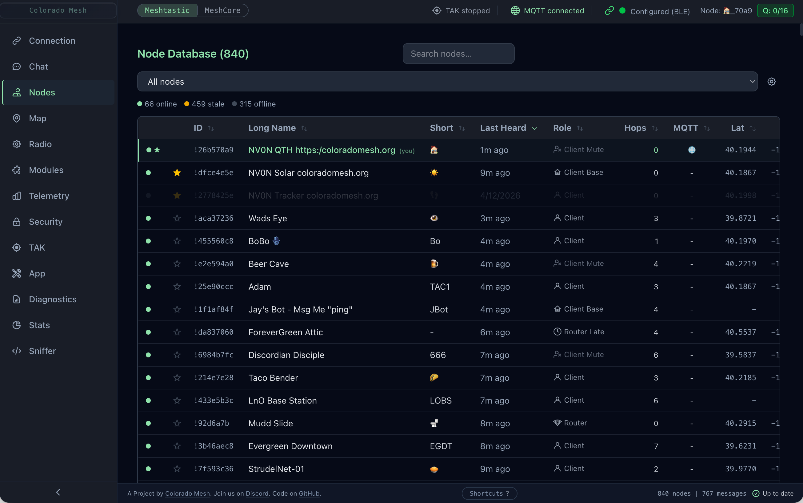
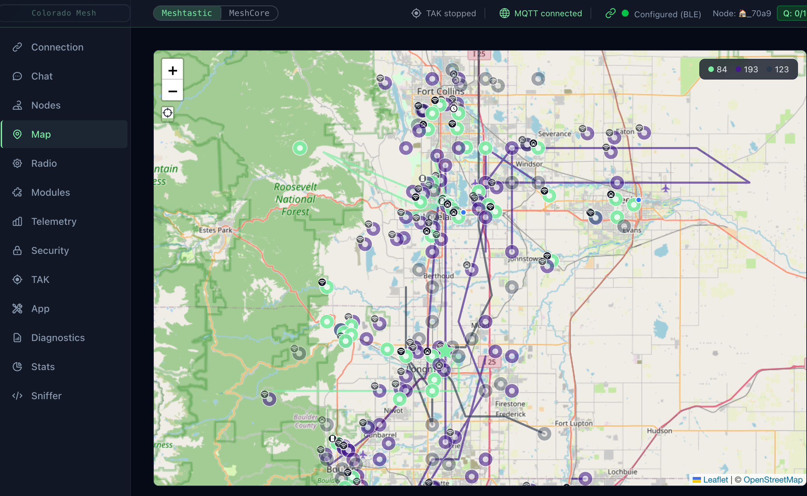
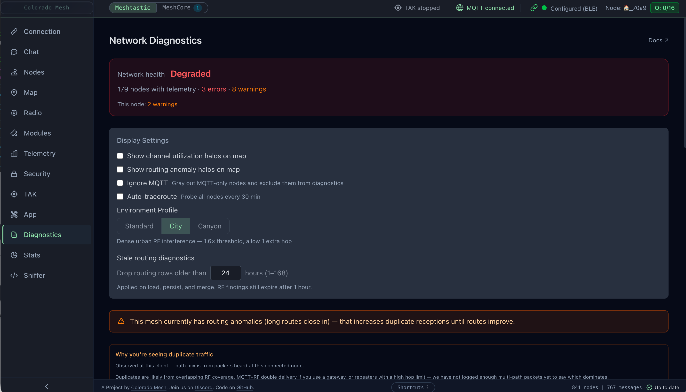
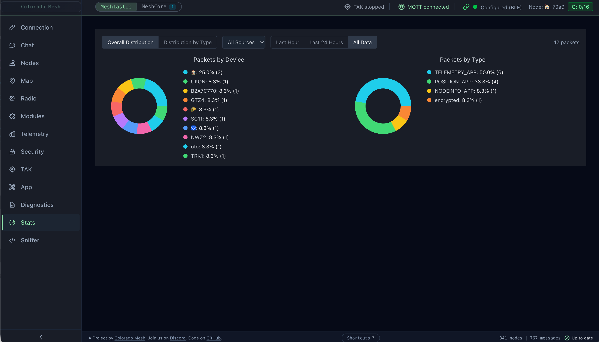
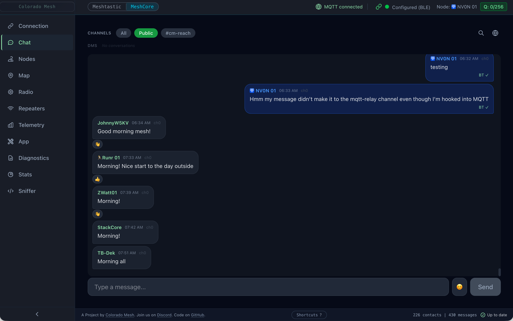
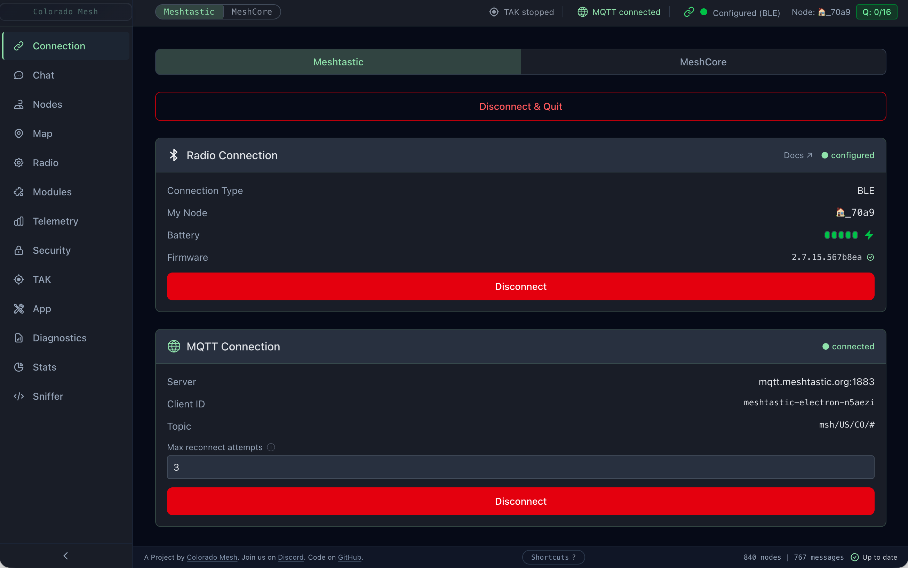
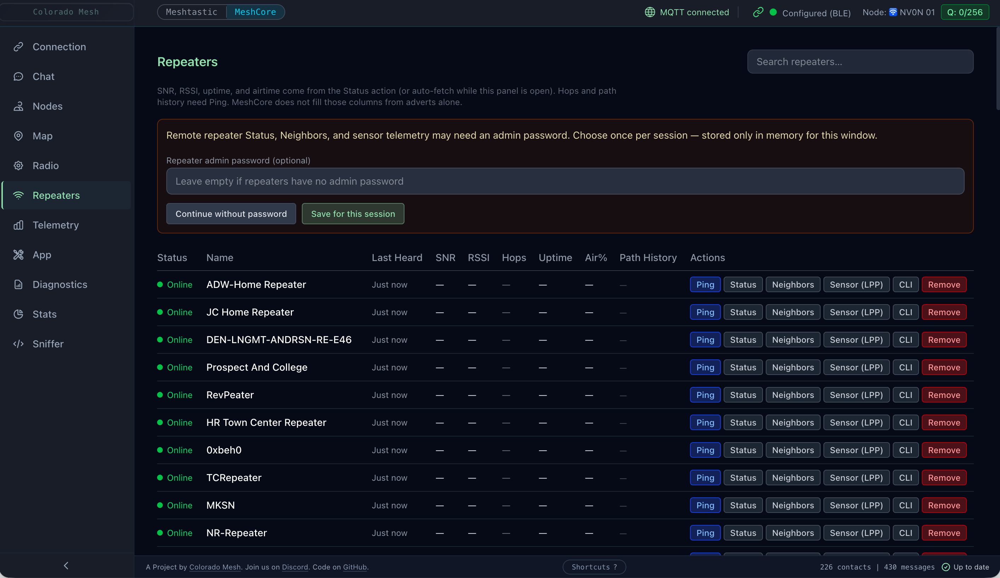
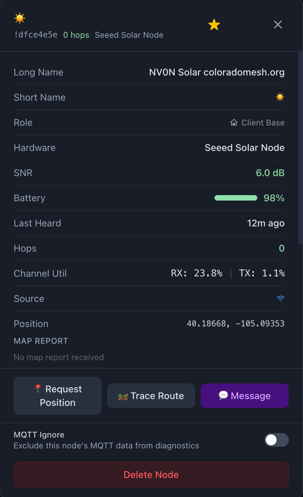
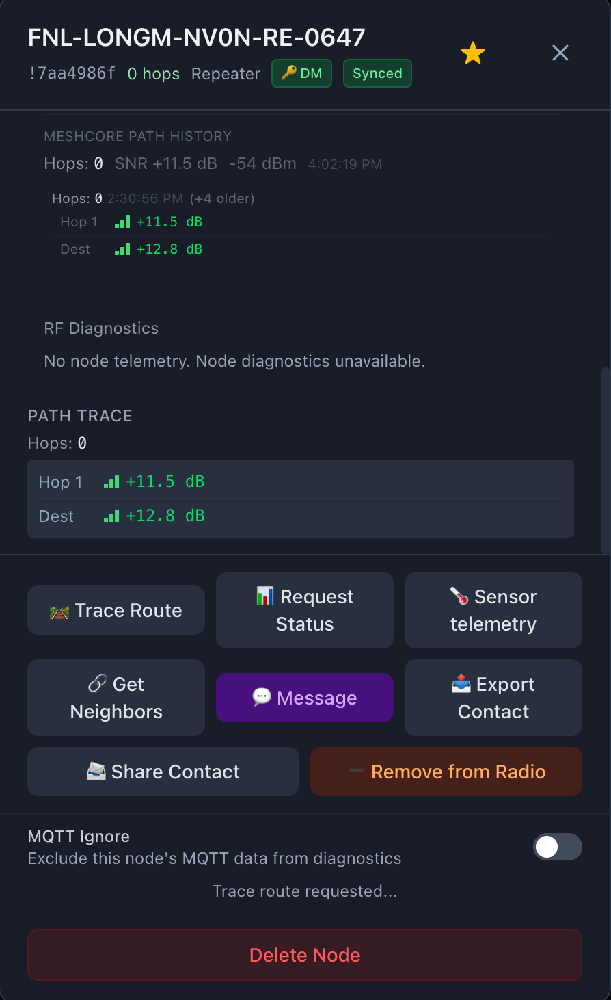

Mesh-Client
Cross-platform Electron desktop client for Meshtastic and MeshCore on macOS, Linux, and Windows — BLE, USB serial, Wi‑Fi/TCP, MQTT, local SQLite history, routing diagnostics, and keyboard-first workflows.


Why
Mesh-Client: The Universal Desktop Suite for Mesh Networks
Reliable Desktop Power. Local Persistence. Total Insight.
While official mobile apps cover the basics, desktop power users often face a fragmented ecosystem: limited app availability for MeshCore, inconsistent support across operating systems, and persistent sync issues on macOS. Mesh-Client fills those gaps with a high-performance, keyboard-driven desktop experience.
With a dedicated local SQLite database, Mesh-Client keeps message history and mesh logs durable across restarts and sync failures. It provides one reliable hub for both Meshtastic and MeshCore firmware, delivering a unified workflow regardless of protocol or hardware.
Why Mesh-Client?
- True message persistence: Local SQLite storage for reliable long-term history, without lost chats or broken logs.
- Universal protocol support: One consistent interface for both Meshtastic and MeshCore devices.
- Advanced mesh visibility: Routing diagnostics and mesh health insight that mobile apps often skip.
- Desktop-first workflow: Keyboard-driven navigation and MQTT integration for power users.
- Cross-platform stability: A feature-rich experience across macOS, Linux, and Windows.
From real-time diagnostics to permanent message archives, Mesh-Client delivers the desktop visibility serious mesh users require.
Known Bugs:
- Linux BLE — uses Web Bluetooth (Chromium's built-in BLE API), with a user-visible picker and user gesture requirement to select a device. MeshCore may prompt for the radio's PIN and run OS-level pairing (
bluetoothctl) before the connection completes when BlueZ reports the device as not paired (see docs/development-environment.md).
Visuals
Screenshots
 |
 |
 |
 |
|
     |
|||
Key Features
Meshtastic Features
Radio & Channel Configuration
- Edit channels: name, PSK, and role; 18 region presets and 7 modem presets
- Device roles: Client, Router, Tracker, Sensor, TAK, and more
- Per-channel MQTT gateway uplink (RF → MQTT); device reboot, shutdown, and factory reset
MQTT
- Subscribe to a broker to receive mesh traffic over the internet; AES-128-CTR decryption, automatic RF deduplication, 10-minute reconnect delay after failed attempts (recovers faster on connack timeout), and an active node cache that periodically refreshes presence information so MQTT-only and RF+MQTT nodes stay visible even when your radio is offline
- Transport indicator (RF / MQTT / both) on received messages; MQTT messages are shown in chat but not rebroadcast over RF
- Enter your broker URL, topic, and optional credentials in the MQTT section of the Connection tab; settings persist across sessions
Module Configuration
- Telemetry module (device, environment, air quality intervals), MQTT relay settings, Canned Messages, Serial module, Range Test, Store & Forward, Detection Sensor, Pax Counter, External Notification, Ambient Lighting, and RTTTL (ringtone) — all editable from the Modules tab; module sections are listed alphabetically
- Module status displays — Range Test, Serial, Store & Forward, Remote Hardware (GPIO), and IP Tunnel show packet counts and last-received timestamps when the corresponding module is enabled on the device
Security (PKI) — Meshtastic only
- Security tab (between Telemetry and App): admin / PKI key management — backup, restore, regenerate, and apply keys and related toggles from the device. Not available in MeshCore mode (no matching firmware surface; the tab is hidden).
Network Diagnostics
- Network health — status band Healthy / Attention / Degraded plus error and warning counts. Degraded applies only when routing error count ≥ 3; fewer errors use Attention so small issues don't paint the whole panel red
- Single table from
diagnosticRows(routing trace rows + RF rows), searchable; rows persist across sessions with an optional restore banner; max age (1–168 hours) trims stale routing (24 h default) and RF (1 h default) rows - Mesh congestion attribution — orange banner when mesh-wide routing stress is present; duplicate-traffic block in node detail when relevant
- Routing anomaly detection: hop_goblin (distance-proven over-hopping), bad_route (high duplication), route_flapping, impossible_hop — with remediation suggestions and severity levels
- Anomaly badges inline in node list; status aura circles on the map; congestion halos toggle; global and per-node MQTT ignore
- Environment Profile segmented control — Standard (3 km), City (1.6× threshold), Canyon (2.6× threshold)
See Diagnostics Reference for a full reference on what triggers each finding and how to interpret it.
Environment Telemetry
- Push-based environment charts (temperature, humidity, pressure, air quality) from Meshtastic telemetry packets, displayed in the Telemetry tab
Packet Redundancy
- Per-node redundancy score derived from the last 20 observed packets;
+Necho count in the node list; collapsible Path History in node detail
TAK Server (CoT Gateway) — Meshtastic only
- TAK tab (between Security and App): broadcast mesh node positions as Cursor on Target (CoT) XML events over TLS TCP (port 8089)
- Enables ATAK, WinTAK, and iTAK clients to see mesh nodes on their tactical maps
- Certificate management: self-signed CA + server + client certificates via node-forge; regenerate anytime from the TAK tab
- Data package generator: export ATAK-compatible (ca.pem, client.p12, connection.pref) for direct import on TAK devices
- Auto-start option (off by default); status indicator in header when running
- ATAK Plugin Messages — incoming ATAK plugin packets from mesh nodes are displayed in the TAK tab with sender node and packet counts
Features Available on Both Protocols
Connectivity
- Bluetooth LE — pair wirelessly; on macOS/Windows, startup auto-reconnect can run without a user gesture (Noble backend). On Linux, Web Bluetooth requires user gesture and picker selection.
- USB Serial — plug in via USB; auto-reconnects silently on startup (saved port signature matches the same physical device across re-enumeration)
- WiFi / HTTP / TCP — connect to network-enabled nodes; saves last address for quick reconnect
- Dual-mode — both Meshtastic and MeshCore run simultaneously; use the protocol switcher pill in the header to switch which view is active (the inactive protocol stays connected in the background); per-protocol unread badges (Meshtastic = green, MeshCore = cyan); passive toast notifications when the inactive protocol receives messages
Chat
- Send/receive messages across channels with per-transport delivery badges and delivery ACK / failure states
- Spellcheck — the message composer uses a textarea with inline misspelling marks; right‑click for replacements (Electron main process configures the spellchecker for Meshtastic and MeshCore)
- Emoji reactions (11 emojis with compose picker) and reply-to-message (quoted preview in bubble)
@[Display Name]tokens (Meshtastic / MeshCore reply, tapback, path, and inline-reference syntax) render as compact inline labels in the bubble instead of raw brackets — see docs/meshcore-meshtastic-parity.md- Unread message divider that persists across restarts; auto-scrolls on tab switch
- Direct messages (DMs) to individual nodes
Node Management
- Node list with SNR, battery, GPS, last heard — signal bars appear only for direct (0-hop) RF neighbors; multi-hop and MQTT-only paths omit bars; SNR in traces and neighbor views uses color-coded quality (good / marginal / poor)
- Cross-Protocol Signal Analyzer — foreign LoRa traffic detection (non-mesh packets); shown in Node Detail when present
- Distance filter, favorite/pin nodes, device role icons
- Node Detail Modal: DM, trace route with per-hop display, delete node, neighbor info, Map Report (Meshtastic), PaxCounter, Detection Sensor, channel utilization (Meshtastic), export/share contact (MeshCore)
Map & Position
- Interactive OpenStreetMap with node positions and your current location (device GPS → browser geolocation → IP-based city-level fallback)
- Position trail — persisted path overlay (configurable 1 h – 7 days); survives restarts via SQLite; toggle and window size in App tab; wipe via Danger Zone
- Auto-refresh at configurable intervals; manual static position entry; send your position back to your device
Telemetry
- Battery voltage and signal quality charts (SNR/RSSI) in the Telemetry tab
Productivity
- Log panel (right rail) — live app log stream, optional debug toggle, Analyze (scans the buffered log for connection, BLE, MQTT, and related patterns and suggests fixes), export or delete the log file
- Full keyboard navigation — press
?for shortcut reference;Cmd/Ctrl+1–9switches the first nine main tabs (on Meshtastic, Diagnostics is the tenth tab — use the tab strip);Cmd/Ctrl+[switches to Meshtastic;Cmd/Ctrl+]switches to MeshCore;Cmd/Ctrl+Shift+Fopens chat search across all channels (optionaluser:nameandchannel:namefilters) - Updates — permanent status in the footer (up to date, update available, errors, download progress, etc.); automatic check runs a few seconds after every launch; Check for Updates… in the app menu (macOS) or Help (Windows/Linux), or tap Up to date in the footer to re-check; Windows/Linux packaged builds can download in-app, macOS and dev builds open the GitHub release page
- System tray with live unread badge; app stays accessible when window is closed
- Persistent SQLite storage; DB export/import/clear in the App tab; Clear GPS Data and Reset Diagnostics without a full DB wipe
Accessibility
- Keyboard navigation — every panel, form, and control is reachable by keyboard; Tab/Shift+Tab cycles interactive elements; all sortable table headers and the hop-limit slider are arrow-key operable; focus indicator is always visible
- Modal focus trap — Tab cycles only within an open modal or dialog; Escape closes and returns focus to the triggering control
- Screen reader support — connection status changes announced via
aria-live; modals and dialogs carryrole="dialog"/role="alertdialog"witharia-labelledby; form errors announced immediately viarole="alert"; sortable columns exposearia-sort; toggle buttons exposearia-pressed; icon-only controls havearia-label; status indicators pair color with a text alternative so they are not color-only - Reduced motion —
@media (prefers-reduced-motion: reduce)suppresses pulse animations, halo rings, and transition effects - Windows High Contrast —
@media (forced-colors: active)support prevents Tailwind from overriding system colors - Automated tests — vitest-axe accessibility assertions run on every major panel as part of the pre-commit test suite
MeshCore Features
MeshCore runs simultaneously alongside Meshtastic. Use the protocol switcher pill in the header to bring MeshCore into view — the Meshtastic session stays connected in the background. Meshtastic shows 12 main tabs (including Security and TAK); MeshCore shows 10 (Security and TAK are hidden; the sixth tab is Repeaters instead of Modules). Sniffer is available in both protocol modes. Network Diagnostics and the rest of the shell stay available.
- Transmit queue — header badge (with tooltip) when the connected radio reports outbound queue depth (STATS).
Contacts & Discovery
- Contact list with advert-based positions, contact types (Chat, Repeater, Room), and GPS coordinates persisted to SQLite; contacts seed from DB on reconnect as a fallback cache
- Favorite / pin — persisted per contact in SQLite (
meshcore_contacts.favorited) - Contact groups — protocol-neutral; create and manage groups from the Nodes toolbar; Meshtastic has built-in groups (GPS, RF+MQTT); filter the list by group; Room contacts excluded from user groups by default
- Import Contacts — Nodes tab: bulk JSON nickname import to pre-fill contact names (not on the Repeaters panel)
- Refresh Contacts — pull the full contact list from the device on demand
- Show Public Keys — toggle to display full public keys under contact names
- Contact Auto-Add — configure auto-add mode (on/off), overwrite existing, max hops; apply settings to device
- Clear All Contacts — destructive action with confirmation (Radio tab Danger Zone)
- Send Advert — broadcast your node's presence (flood advert) to the mesh with loading state and toast feedback
- Manual Contact Approval — toggle between auto-add (contacts appear automatically when heard) and manual-add (new contacts require approval before appearing); preference is persisted and re-applied on reconnect
Messaging
- Channel messaging and direct messages (DMs) with delivery ACK tracking (
expectedAckCrc) and failure timeout; DM threads can be closed from the chat UI - Transport badges on received messages — RF, MQTT, or both (persisted as
received_viainmeshcore_messages); MQTT JSON chat can be used when RF is down - Incoming push events: periodic advert (0x80), path update (0x81), send confirmed (0x82), message waiting (0x83), new contact (0x8A), incoming DM (7), incoming channel message (8)
- All messages and contacts persisted to SQLite (
meshcore_messages,meshcore_contactstables)
Diagnostics & Remote Queries
- Trace route (
tracePath) — per-hop SNR display; each intermediate hop's SNR is reported individually, unlike Meshtastic's hop-count-only trace - Repeater Status — on-demand query of noise floor, last RSSI/SNR, packet counts, air time, uptime, TX queue, error events, and duplicate counts; available for any contact
- Remote Telemetry — pull CayenneLPP-encoded environment data (temperature, humidity, barometric pressure, voltage, GPS) from any contact via
getTelemetry; results shown inline in the node detail modal with fetch timestamp - Neighbor Info — query a Repeater node's neighbor list via
getNeighbours; shows each neighbor's name (resolved from contacts or hex prefix), how recently it was heard, and color-coded SNR
Repeaters
- Repeaters panel (MeshCore-only tab) — list repeaters with on-demand status (noise floor, RSSI/SNR, packet counts, air time, uptime, TX queue); Path column shows a per-hop SNR sparkline from the last trace (last trace/path hop data is also stored in local SQLite so sparklines can survive app restarts); per-row Neighbors expands an inline neighbor list (same query as node detail)
- Repeater CLI — per-repeater expandable CLI interface; command input with Enter to send, scrollable command/response history, Up/Down arrow history navigation, quick-command bar (get name, get radio, neighbors, version, …), flood vs. auto (saved path) routing toggle; responses are correlated to commands via 2-character hex prefix tokens; configurable retries with dynamic timeout
- Remote session authentication — when the firmware requires it, a banner guides you through one-time setup so status and neighbor RPCs can run; credentials are session-scoped
- Panel toolbar — Reboot Device (shown when the device supports the command); Send Advert and Sync Clock moved to Radio panel Device Actions section
- Per-repeater removal — two-click confirm button on each row; removes from in-memory state and deletes from the SQLite contacts DB
- Clear All Repeaters — Danger Zone entry in the App tab that deletes all Repeater-type contacts (contact_type = 2) from the DB while leaving Chat and Room contacts intact
Radio Parameters
- Frequency (Hz), bandwidth, spreading factor, coding rate, and TX power — synced from device
selfInfoand applied live via the Radio tab - Channel display and edit — view and edit channel list from the device in the Radio tab; Import Config JSON (MeshCore) applies name and radio settings to the device and reports what was applied vs. not supported
Battery & Signal Telemetry
- Battery voltage from device
selfInfo; per-packet signal telemetry (SNR/RSSI) from RF event 0x88 — visible in the Telemetry tab - Environment charts (temperature, humidity, barometric pressure, etc.) in the Telemetry tab when pulled Cayenne LPP data is available — same panel as Meshtastic environment telemetry
- Raw Packet Log (Sniffer tab) — MeshCore: real-time virtualized log of RF packets from the
LOG_RX_DATApush event (0x88), with route type, payload type, hop count, SNR, RSSI, optional resolved node name, and expandable raw hex; Meshtastic: log of received mesh packets (protobuf) with port/type, RF vs MQTT, SNR, RSSI, node name, and expandable hex; filter by type, name, or hex; Clear resets the log; ring-buffer capped at 2,500 entries per protocol
Device Control
- Reboot — Radio tab Danger Zone; issues
reboot()to the connected MeshCore device with a protocol-aware confirmation message - Not available for MeshCore (not implemented in the meshcore.js library): shutdown, factory reset, reset NodeDB, reboot-to-OTA, enter DFU mode
Transport Notes
- BLE: waits for GATT init (
connectedevent) before issuing commands; includes nudge timeout for stuckdeviceQueryon some devices. On Windows, pair the MeshCore device in Settings → Bluetooth & devices before connecting in the app; WinRT may need a bonded device for a stable Nordic UART session. On Linux, the app checks BlueZ pairing and may prompt for the PIN before Web Bluetooth completes when the radio is not bonded. A second connect attempt may run automatically after some transient GATT discovery or handshake timeouts (retry reuses the granted device without a new picker gesture). - Serial: auto-reconnects on startup using a saved port signature so reconnect targets the same physical device when possible
- TCP: connects to MeshCore companion radio on port 5000
- MQTT (JSON v1): The Connection tab MQTT card includes Network Preset buttons — LetsMesh (WebSocket on port 443, topic prefix
meshcore; broker auth uses@michaelhart/meshcore-decoder'screateAuthToken— MQTT usernamev1_<64-hex public key>, password token with JWTaudmatching the MQTT server hostname (e.g.mqtt-us-v1.letsmesh.netfor the US preset); optional Packet logger (Analyzer) forwards RX packet summaries to the broker when enabled; see docs/letsmesh-mqtt-auth.md), Ripple Networks (TLS on port 8883, same topic prefix, preset default credentials, and Allow insecure TLS for brokers that use a non–public CA), Colorado Mesh (TLS on port 8883 or 443, same topic prefix, JWT auth with custom audience mapping), and Custom for your own broker
Limitations
- MQTT → RF: Messages received via MQTT are shown in chat but are not rebroadcast over the radio. Previous relay behavior caused duplicate or misattributed messages.
- MeshCore — MQTT (JSON v1): The Connection tab can connect to an MQTT broker in MeshCore mode using a small JSON chat envelope (see docs/meshcore-meshtastic-parity.md). This is separate from Meshtastic's protobuf MQTT pipeline.
- MeshCore — no routing anomaly diagnostics: Hop anomaly detection (hop_goblin, bad_route, etc.) and RF diagnostics require Meshtastic-specific packets (
hops_away, LocalStats, NeighborInfo). The Network Diagnostics tab is available in MeshCore for foreign LoRa detection and other shared features. - MeshCore — channel editing: Can add/edit/delete channels (name + PSK) via the Radio tab, but does not expose Meshtastic-style full protobuf config. Radio parameters (frequency, bandwidth, spreading factor, coding rate, TX power) can be set via the Radio tab.
- MeshCore — remote telemetry availability:
getTelemetryrequires the remote node to have environment sensors. A timeout is returned if the node has no sensor data. - MeshCore — neighbor info availability:
getNeighboursis supported only by Repeater-type nodes running firmware v1.9.0+. The button is hidden for Chat and Room contacts. - MeshCore — Trace Route / Ping trace: Remote nodes typically respond only if they have your node as a contact. One-way or foreign heard nodes may lead to a client-side timeout — see Troubleshooting — MeshCore: Trace Route or Ping trace times out.
- MeshCore — contact type labels: MeshCore reports a numeric
typefield (0 = None, 1 = Chat, 2 = Repeater, 3 = Room); displayed in the hw_model field in the node list. - MeshCore — no Security / PKI tab: Meshtastic-style admin key management is not exposed for MeshCore; the Security tab is omitted in MeshCore mode (
hasSecurityPanel). - Map tiles — OpenStreetMap Referer requirement: Packaged desktop builds load the UI from the local filesystem. The main process now loads the renderer with an explicit HTTP referrer so OpenStreetMap tile requests include a valid
Refererheader and comply with the tile usage policy. If you point the app at a different tile server, ensure its usage policy permits this client.
Quick Start
Pre-built binaries for macOS, Linux, and Windows are available in the GitHub Releases area. Download the installer or archive for your platform — no Node.js or build tools required.
macOS (release download): If macOS reports "Mesh-client" is damaged and can't be opened (or File is damaged and cannot be opened):
- Open System Settings → Privacy & Security and scroll to the bottom. If you see "Mesh-client was blocked from use", click Allow to run the app.
- If you don't see the Mesh-client entry in Privacy & Security, or the app still won't open after clicking Allow, that is usually Gatekeeper quarantine on downloaded, unsigned apps — especially on Apple silicon (M-series) Macs — not a corrupt file. Remove the quarantine attribute:
xattr -r -d com.apple.quarantine /Applications/Mesh-client.app
After running xattr, check Privacy & Security again (scroll to the bottom) — the entry should now appear with an Allow button.
See Troubleshooting — macOS: File is damaged… and this explanation for a similar Electron app.
Building from source / development setup: see docs/development-environment.md for complete shared requirements, clone/install steps, test harness setup, and detailed macOS/Windows/Linux instructions.
Run Locally
Prerequisites: Node.js 22.13.0+ and pnpm 10+.
git clone https://github.com/Colorado-Mesh/mesh-client
cd mesh-client
pnpm install
pnpm run dev
For OS-specific steps — BLE permissions on macOS, serial port group on Linux, Visual Studio Build Tools on Windows — see docs/development-environment.md.
Usage
Choosing a Protocol
Both protocols run at the same time. Use the Meshtastic / MeshCore switcher pill in the header to bring the desired protocol's view into focus — the other session remains connected in the background. Each protocol stores its own last-connection and auto-reconnects independently on startup.
Connecting Your Device
Meshtastic:
- Power on your Meshtastic device
- Put it in Bluetooth pairing mode (if connecting via BLE)
- Open Mesh-Client and go to the Connection tab, ensure Meshtastic is selected
- Select your connection type (Bluetooth / USB Serial / WiFi / MQTT)
- Click Connect and select your device from the picker
- Wait for status to show Configured — you're connected
MeshCore:
- Power on your MeshCore firmware device
- In the Connection tab, select MeshCore
- Choose Bluetooth, Serial, or TCP (enter the device's IP address for TCP)
- Click Connect — the app fetches self info, contacts, and channels from the device
- Wait for status to show Configured — contacts and channels are loaded
Auto-Reconnect
After a successful connection, Mesh-Client remembers your last device per protocol. On next launch:
- Serial — auto-connects silently in the background (both protocols)
- Bluetooth (macOS/Windows) — auto-scans on launch and reconnects when the last device is discovered (no user gesture required)
- Bluetooth (Linux) — Web Bluetooth requires a user gesture; click Reconnect or Connect to open the picker. MeshCore: if the device is not paired in BlueZ, enter the PIN from the radio when prompted (OS pairing runs before the connection finishes).
- WiFi / TCP — a one-click reconnect card appears; click Reconnect
- MQTT — auto-reconnects using saved broker settings (Meshtastic protobuf pipeline; MeshCore JSON v1 adapter — select transport when connecting)
MQTT
Enter your broker URL, topic, and optional credentials in the MQTT section of the Connection tab. When connected, the section collapses to a compact info card showing the server, client ID, and topic. You can send messages via MQTT without a radio when using Meshtastic, or MeshCore with brokers other than the public LetsMesh presets (Ripple / Custom still use the JSON v1 chat envelope for MQTT-only sends). LetsMesh public MQTT targets the Analyzer packet-logger model: optional RX summaries to {topicPrefix}/meshcore/packets when your radio is connected (docs/letsmesh-mqtt-auth.md); MQTT-only channel chat to LetsMesh without a radio is not supported. Meshtastic uses the protobuf MQTT stack; MeshCore broker details are in docs/meshcore-meshtastic-parity.md. In MeshCore mode, LetsMesh / Ripple Networks / Colorado Mesh presets fill those fields for the corresponding public networks. LetsMesh uses the same contract as meshcore-mqtt-broker with JWT aud matching the regional broker hostname you connect to (e.g. mqtt-us-v1.letsmesh.net / mqtt-eu-v1.letsmesh.net); mesh-client generates tokens from your imported MeshCore identity (public_key + private_key in config JSON). Colorado Mesh uses JWT auth with custom audience mapping for meshcore_mqtt.coloradomesh.org. Use Custom and paste credentials manually if your operator issued different rules.
Configuration
Connection Types
Meshtastic supports all four transport types:
| Platform | Bluetooth | Serial | HTTP | MQTT |
|---|---|---|---|---|
| macOS | Yes | Yes | Yes | Yes |
| Windows | Yes | Yes | Yes | Yes |
| Linux | Yes | Yes | Yes | Yes |
MeshCore supports BLE, Web Serial, TCP, and optional MQTT (broker JSON v1 adapter):
| Platform | Bluetooth | Serial | TCP | MQTT (JSON v1) |
|---|---|---|---|---|
| macOS | Yes | Yes | Yes | Yes |
| Windows | Yes | Yes | Yes | Yes |
| Linux | Yes | Yes | Yes | Yes |
Tech Stack
| Component | Technology |
|---|---|
| Desktop | Electron |
| UI | React 19 + TypeScript 6 |
| Styling | Tailwind CSS v4 |
| Meshtastic | @meshtastic/core + transport-http, transport-web-serial (JSR); BLE via @stoprocent/noble (macOS/Windows) and Web Bluetooth (Linux) |
| MeshCore | @liamcottle/meshcore.js (BLE, Web Serial, TCP via main-process IPC) |
| Maps | Leaflet + OpenStreetMap |
| Charts | Recharts |
| Database | SQLite (node:sqlite built-in, via db-compat.ts shim) |
| Build | esbuild + Vite + electron-builder |
Architecture
For detailed project structure, data flow, and code placement guidelines, see ARCHITECTURE.md.
Diagnostics Reference
For a detailed explanation of every diagnostic output — routing anomalies, RF findings, packet redundancy scores, map halos, and MQTT filtering — see Diagnostics Reference.
Contributing / Development
For full local setup (shared requirements, npm/tooling install, test harness, and OS-specific steps/troubleshooting), see docs/development-environment.md.
Documentation uses MkDocs; if you are updating docs, install the MkDocs Python dependency (pnpm run docs:install) and run pnpm run docs:build.
For coding conventions and PR workflow, see CONTRIBUTING.md.
Community
Join the #mesh-client channel on Discord for help, feedback, and development discussion: https://discord.com/invite/McChKR5NpS
Troubleshooting
See Troubleshooting for complete troubleshooting guidance.
License
MIT — see LICENSE
Credits
See Credits. Created by Joey (NV0N) & dude.eth. Based on the original Mac client. Part of Colorado Mesh.